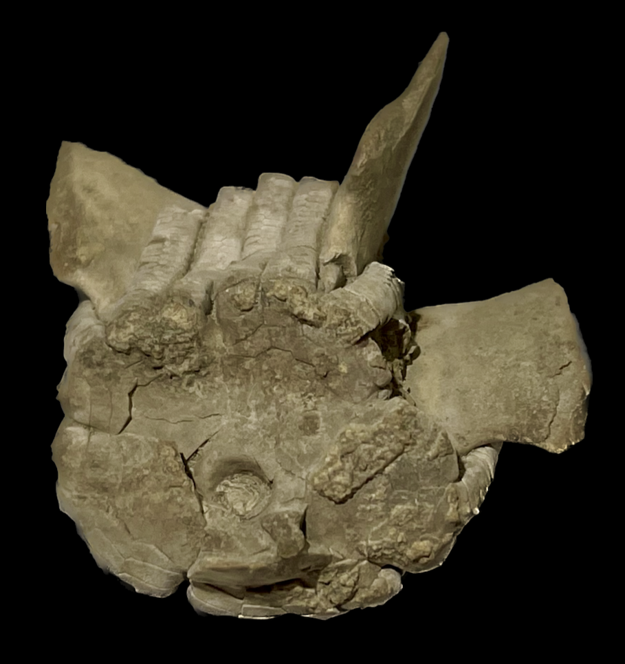
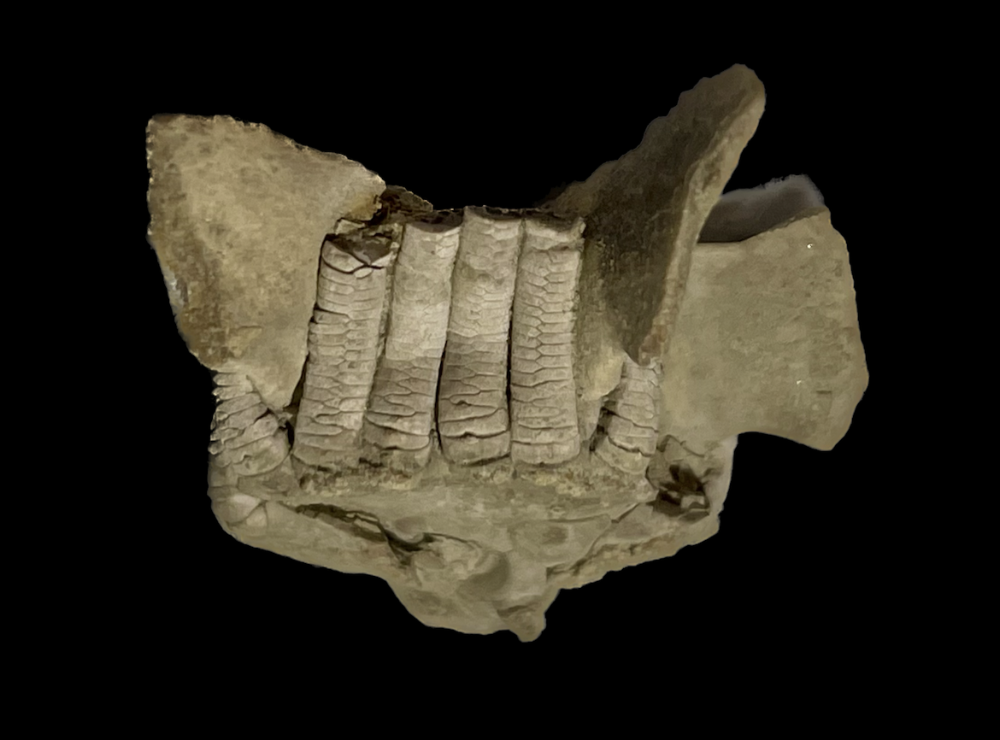
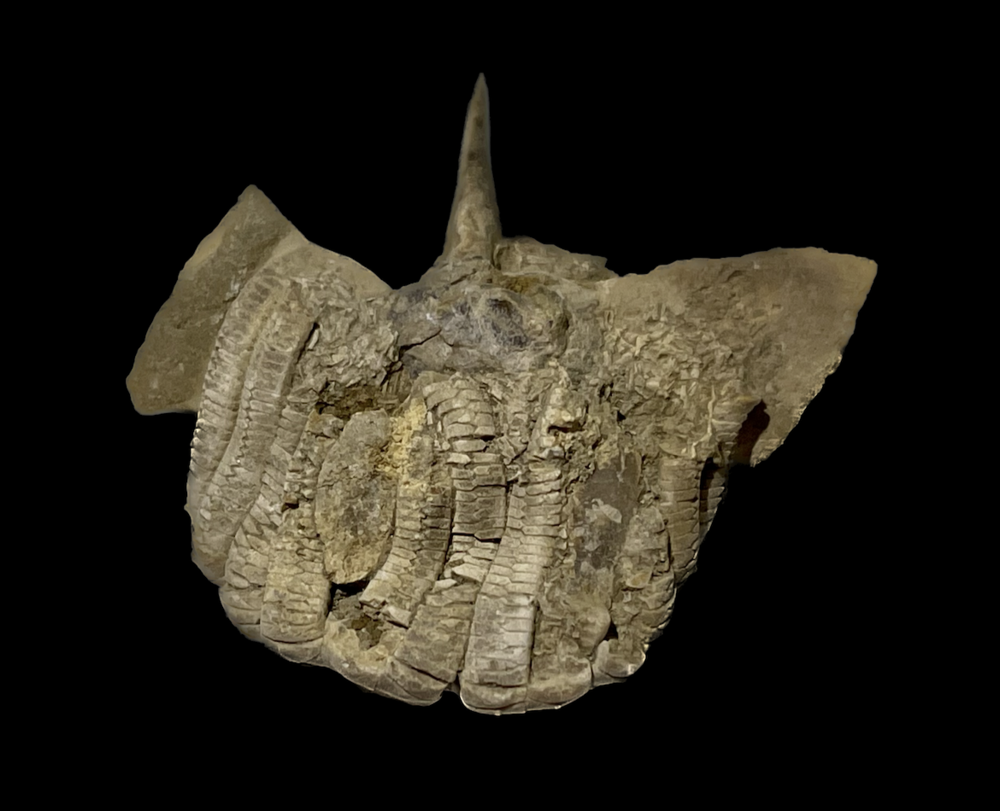

Pterotocrinus depressus
Size: 3 cm across the "wings"Pterotocrinus is a very unusual crinoid aptly named for the striking "wings" arising from the tegmen ("Ptero-" deriving from the Greek word for "wing". Different species of Pterotocrinus are often distinguished and named by the shape of these wings. |
 |
|---|
Copyright © 2024 by Samuel Kim, all rights reserved